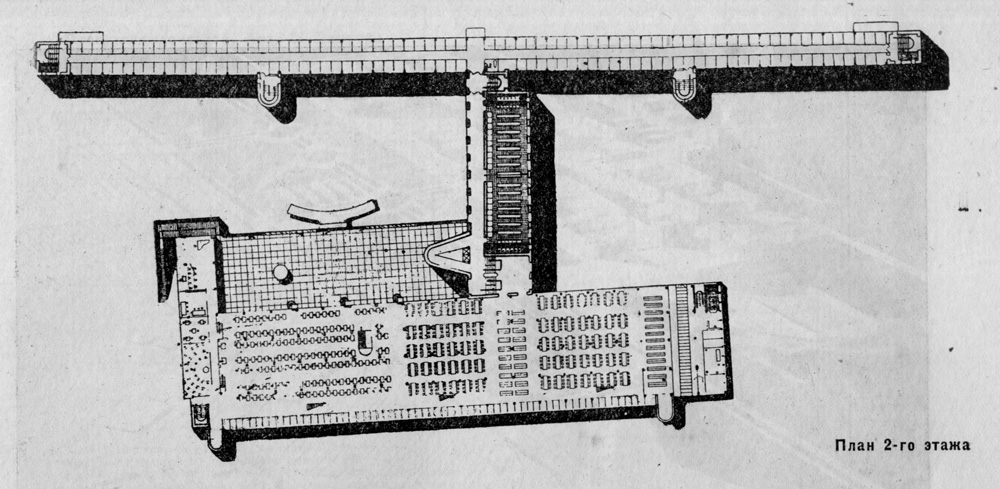

Is it possible to cognize/perceive this flow? It is possible to think of the flow itself conceptually, verbally. But, referring to the experience of perception, it is still a set of ‘now’ states. Perhaps there are attempts to immerse oneself in that flow, to merge with that flow, while still registering that merging. We are already in this flow, but we do not experience ourselves as ‘a flow’. This is because we experience ourselves substantively, here and now. That is the identification of ‘I’ as pronoun and ‘I’ as transcendental. In this transcendental state, they transform the existential into a more fluxional. These are the experiences that can be carried out through a change of consciousness that break this relation of the ego. When we stop identifying with our own body, when there is no possibility of fixing ourselves in some space, then there is this experience of flow.
Examples of this can be seen in the experiments of the constructivist and functionalist architects. The principle of their practices is to explore the possibilities of the most efficient movements of the human body by studying motor skills. To achieve becoming a human cog in the system. It creates a feeling of deprivation, since these movements are so effective that you stop feeling your body. The plans of such communal buildings show how the architects were trying to reconstruct the human habitat and to free from the ‘I’ as an individual, the ‘I’ as a pronoun.
A characteristic example of this functional method was the communal houses. The idea of the commune-house involved a complete ‘communalization’ of everyday life. That is to say, with their help there was a transition from the individual to the collective. Further on, the USSR was seen as a giant laboratory where «the egoistic impulses of the individual would be transformed so that people would function as a single collective body or machine».15 A famous example of buildings of this type is the commune-house of the Textile Institute in Moscow.

The plan proposed by the architect Ivan Nikolayev was as follows 16
1. An alarm rings in the morning.
2. The student– dressed in simple canvas pajamas and underwear– goes down to the gymnasium for class or up on the flat roof for morning gymnastics.
3. While the student is away, the closed night cabin in which he slept is subjected to vigorous ventilation during the day.
4. After exercise, the student heads to the checkroom for clothes and underwear. There is also a row of shower stalls where one can take a shower.
5. After a quick breakfast in the dining hall, the student goes to class, after which he or she participates in collective activities.
6. The evening bell– gathering everyone for a walk– ends the day. Next, the student goes to the dressing room, takes a night suit from the closet, and returns to his compartment.
In ‘The Surface of Design’, Jacques Rancière seamlessly moves from the aesthetic experience to the social. He is interested in how twentieth-century design practices define other kinds of practices. Ranciere mentions: "creators of goods, those who put goods on display or place images of them in catalogs, those who design buildings and posters, those who construct the ‘setting of the city’. But also politicians who suggest new forms of community around particular institutions, characteristic activities or amenities –like the ‘Soviet power and electrification of the whole country’.”17
«The Distribution of the Sensible» 18 is a concept formed on the border between aesthetics and politics. Politics and art become forms of distribution of the sensible with Rancière. The avant-garde also interests him as an intertwining of aesthetic and political activity, as a practice of reconfiguration of the sensible. Starting from the Platonic principle of ‘everyone does his own thing’, Rancière –on the contrary– sees no harmony in that principle, since it excludes a part from the whole, the private and the common.
Plato proceeded from this impossibility or impracticability of doing many things at the same time. In his view, ‘man can be neither dual nor plural, doing one thing at a time’. The ideal government is different precisely because it assigns a particular function to everyone. «Only in our state,» Plato writes: «will we find that a shoemaker is a shoemaker and not a forager in addition to his shoemaking; that a farmer is a farmer and not a judge in addition to his farming work, and a military man is a military man and not a businessman in addition to his military occupation; and so on.»19 For example, a slave who does not have the right to vote is excluded from the common political space, and a craftsman has ‘no time’ to take part in the common business of governing the state, since all his time is taken up with work. On the other hand, rulers and guards –while constituting only a part of society– own the common social space and time, by the nature of their activity. Departing from the Platonic principle, Rancière’s concept does not consider social structure as such. It speaks of the perception of reality as a division of common space-time.
In one of his interviews 20 he defines his approach as ‘horizontal’, thinking in terms of horizontal distributions, avoiding the opposition between substratum and surface, inner and outer, true and false, phenomenon and essence. Rancière’s thought moves horizontally –like a gaze across the surface of a picture. In this respect, he can be seen as the continuator of Deleuze and Guattari’s tradition. 21 The concepts of nomadic thinking, rhizome, plateau and flow –which they develop– describe thinking as sliding along a plane. The natural consequence of this approach is the replacement of the classical categorical apparatus (truth/lies, matter/form, subject/object) with the new terminology (plateau, rhizome, flow). Similarly, Rancière abandons all sorts of opposition of illusory and real, explicit and implicit, in order to remain on the surface of the sensible experience.
All these artistic methods lie in the context of defamiliarization-formalism. The idea of making familiar things unfamiliar, to de-automatize perception. Many artists such as Kandinsky, Duchamp, Malevich, Filonov, Breton and Rodchenko write about the construction of thinking of a new sensibility.